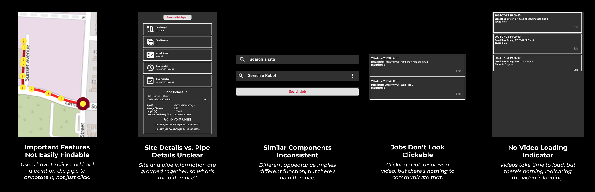

Redesigned the Pipe Portal for business professionals to better inspect pipe inspection data and identify damages.
UI/UX Design
Site Teardowns
Competitive & Comparative Analysis
Usability Testing
Web Development
Enhanced key usability principles. Advocated for, organized, and conducted a heuristic-based usability test to identify pain points before development.
Engineers in the lab worked on building a robot for businesses to inspect the insides of their pipes. Data from the robot needs to be clearly presented to business professionals, who want to view the pipe data and annotate damaged sections.

This helped me understand key concepts in the problem space. For example, I learned that jobs in the portal were where the data was stored, and jobs were organized into work orders. More notably, however, I discovered several usability issues within the portal.
Armed with crucial background information and a course of action, I moved into brainstorming.
This would nail down user flows and the portal's information architecture without being burdened by aesthetics. I made sure to keep the 5 areas of improvement in mind. For example, I made the annotation feature more explicit with a visible, clearly labeled button.


With sketches finalized, I had some solid structures and a low fidelity mock-up.

We conducted a heuristic-based usability test with 6 lab members to measure the design's usability.
Participants were asked to rank the design across 7 different heuristics, similar to the 5 areas of improvement.
We discovered a major flaw in the user flow.

After making the changes from the usability test and with limited time left, I began developing the data display page. I used the Next.js framework for its ease of use, built-in routing, and my extensive experience with it.